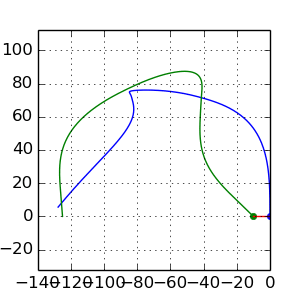
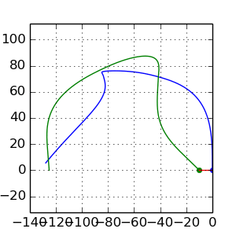

Wprowadzenie
W ramach tych zajęć nauczymy się korzystać z bibliotek Pythona na przykładzie NumPy, Matplotlib i SciPy. W praktyce większość narzędzi z których korzysta się nacodzień w Pythonie pochodzi właśnie z wymienionych bibliotek. Oprócz tych zagadnień nauczymy się jak odczytywać/zapisywać pliki oraz jak wykonywać przydatne operacje na poziomie systemu.
Wykorzystywanie istniejących modułów
Podczas poprzednich zajęć powiedzieliśmy, że każdy plik jest nazywany modułem. Aby z niego skorzystać w innym pliku należy na początek zaimportować go do aktualnego pliku. W tym celu posługujemy się następującym wyrażeniem:
import nazwa_moduluJeśli utworzyliśmy plik o nazwie “matrix.py” zawierający jakieś funkcje które wykonują operacje na macierzach, to aby skorzystać z tych funkcji musimy się do nich odwołać za pośrednictwem nazwy modułu, tzn.:
import matrix
A = matrix.create() #wywolanie funkcji "create" z pliku matrix.py
matrix.invert(A)Czasami jednak takie odwływanie się jest uciążliwe, ponieważ musimy za każdym razem powtarzać nazwę “matrix”. Sytuacja będzie jeszcze trudniejsza jeśli np. plik “matrix.py” znajduje się folderze “tools”:
import tools.matrix
A = tools.matrix.create()
tools.matrix.invert(A)Do rozwiązania takiego problemu służy słowo “as” które pozwala zmienić nazwę importowanego modułu. Dzięki temu możemy odwoływać się do tych funkcji za pomocą skróconego zapisu:
import tools.matrix as mat
A = mat.create()
mat.invert(A)Innym sposobem rozwiązania tego problemu jest częściowy import, który pozwala na import tylko wybranych elementów danego pakietu:
from tools.matrix import create
from tools.matrix import invert
A = create()
invert(A)W powyższym kodzie zamiast importować moduł tools.matrix zaimportowaliśmy tylko same funkcje “create” i “invert”. Należy jednak uważać nazwy importowanych funkcji nie wprowadzały konfliktu z innymi funkcjami. Załóżmy, że importujemy z dwóch różnych pakietów funkcje invert:
from tools.matrix import invert
from other.numerical import invert
invert()W tej sytuacji funkcja “invert” z pakietu tools.matrix zostanie “przykryta” drugą funkcją z pakiety “other.numerical” i nie będziemy mieli do niej dostępu. Dlatego w takiej sytuacji lepiej jest korzystać z funkcji wykorzystując nazwę pakietu.
Ostatnim użytecznym sposobem importowania narzędzi jest skorzystanie ze znaku “*" zamiast nazw funkcji. Pozwala to na import wszystkich funkcji znajdujących się wewnątrz danego pliku. Oczywiście, podobnie jak poprzednio należy zachować szczególną uwagę na nazwy funkcji. Taki sposób importowania jest przydatny gdy piszemy bardzo krótki kod:
from tools.matrix import *
A = create()
invert(A)Dokładnie w taki sam sposób możemy importować wszystkie narzędzia, nie koniecznie tylko te które sami napisaliśmy, ale także te które pochodzą z zainstalowanych bibliotek. Aby skorzystać z funkcji służącej do całkowania znajdującej się w bibliotece SciPy możemy przykładowo napisać taki kod:
from scipy.integrate import odeint
# ...
# ... jakis kod wyznaczajacy wektory Y0 i timeSteps
def funkcja_prawych_stron():
pass
Y = odeint(funkcja_prawych_stron, Y0, timeSteps )Generator enumerate i zip w pętli for
Na poprzednich zajęciach pokazaliśmy jak iterować po kolejnych elementach listy, albo po indeksach przy użyciu funkcji range. Bardzo często zdarza się, że zarówno chcemy pobierać element z listy, ale także znać indeks tego elementu. Bazując na poznanych narzędziach mamy 2 opcje:
aList = [ i**2 for i in range(10)]
index=0
for elmnt in aList:
print ( "Element aList[%d]=%f" % (index, elmnt))
index += 1lub:
aList = [ i**2 for i in range(10)]
for index in range(10):
print ( "Element aList[%d]=%f" % (index, aList[index]))Takie konstrukcje wymagają dodatkowej operacji, zliczania indeksów albo pobierania elementów z listy. Aby ułatwić pisanie takich pętli w Pythonie posiada wbudowana funkcję o nazwie enumerate która zwraca generator par (index, wartosc_z_sekwencji). Dzięki możliwości rozwijania sekwencji (tutaj wspomnianej pary) do zmiennych możemy powyższe kody uprościć do takiej pętli:
aList = [ i**2 for i in range(10)]
for index, elmnt in enumerate(aList):
print ( "Element aList[%d]=%f" % (index, elmnt))Jak widać w powyższym kodzie zamiast iterować po elementach listy aList iterujemy po elementach generatora enumerate. Jeśli chcemy iterować tylko po kolejnych indeksach z listy o danej długości należałoby napisać pętlę:
for i in range(len(aList)):
print iW tej sytuacji także możemy skorzystać z funkcji enumerate która jest krótszym zapisem niż zagnieżdżone len w range. Ale w tej sytuacji będziemy dostawali zbędny element który trzeba przypisać do zmiennej. W takich sytuacjach programiści czasami korzystają ze “sztuczki” i przypisują drugi element z pary do zmiennej o nazwie “_“:
for i,_ in enumerate(aList):
print iTaki kod wygląda bardziej elegancko, jednak może być wolniejszy w wywołaniu, ponieważ zawsze będą pobierane elementy z listy.
Oprócz generatora enumerate bardzo użyteczny jest także generator o nazwie zip. Służy on do iterowania po dwóch listach na raz. Generator ten, podobnie do enumerate zwraca pary, które możemy rozwinąć do zmiennych lub korzystać nich jako para:
aList = [ i**2 for i in range(10)]
bList = [ (i-1)**2 for i in range(10)]
# with pair
for p in zip(aList, bList):
print p[0], p[1]
# or by
for a, b in zip(aList, bList):
print a, bNazwane argumenty funkcji
Podczas używania różnych funkcji często spotykamy się z sytuacją gdy do funkcji przekazujemy argument z pewną nazwą, np.:
tab = np.zeros(20, dtyp=int)W powyższym przykładzie jako nazwany argument użyliśmy “dtype”. Nazwane argumenty funkcji mogą być przekazywane w dowolnej kolejności, np. oba poniższe wywołania wykonają ten sam kod:
plot(x,y, linestyle="-", color="red")
plot(x,y, color="red", linestyle="-")Za pomocą nazwanych argumentów można wywoływać własne funkcje przekazując je w dowolnej kolejności:
def funkcja(xarg, yarg):
print "xarg="+str(xarg)
print "yarg="+str(yarg)
funkcja(yarg=3, xarg=1)Numpy array zamiast list
Na poprzednich zajęciach uczyliśmy się jak przechowywać dane w listach. Listy są kontenerami zawierającymi dowolne typy. Ma to duży wpływ na wydajność kody gdy w rzeczywistości wiemy, że lista na której pracujemy składa się tylko z liczb tego samego typu. Wbudowany typ list przed wywołaniem dowolnej operacji, np. dodawania, będzie musiał wykonać sprawdzenie czy taka operacja może być wykonana na przekazanych typach. Dlatego w przypadku wykonywania operacji na dużych zbiorach danych lepiej jest skorzystać z narzędzi, które potrafią zoptymalizować wykonanie takiego kodu. Jednym z takich narzędzi jest klasa array pochodząca z biblioteki NumPy. Tablice te różnią się znacząco od list, ponieważ: 1. rozmiar jest stały, 2. typ zmiennych jest ten sam w całej liście.
Dlaczego jeszcze należy poznać bibliotekę NumPy? Głównie dlatego, że większość innych narzędzi związanych z obliczeniami numerycznymi czy rysowaniem wykresów jako wynik obliczeń zwraca obiekty które są właśnie typu numpy.array.
Tworzenie tablic numpy.array
Aby utworzyć nową tablicę można skorzystać z konstruktora (funkcji tworzącej obiekt) klasy numpy.array. Konstruktor przyjmuje Jako argument obiekt, po którym można iterować, tzn. taki którego można użyć w pętli for. W ten sposób utworzymy tablicę wypełnioną zadanymi elementami:
import numpy as np
tablica1 = np.array([1,2,5,12,5])
print tablic1# >> [ 1 2 5 12 5]Możemy także skorzystać wprost z generatora range:
import numpy as np
tablica1 = np.array([i for i in ragne(10])
print tablic1# >> [0 1 2 3 4 5 6 7 8 9]
tablica1 = np.array(range(10)
print tablic1# >> [0 1 2 3 4 5 6 7 8 9]Drugim sposobem inicjalizacji tablicy jest wykorzystanie funkcji:
- zeros - generuje tablicę o zadanym rozmiarze wypełnioną zerami
- ones - generuje tablicę o zadanym rozmiarze wypełnioną jedynkami
- zeors_like - generuje tablicę wypełnioną zerami o rozmiarze takim samym jak przekazana tablica
- ones_like - generuje tablicę wypełnioną jedynkami o rozmiarze takim samym jak przekazana tablica
import numpy as np
tablica1 = np.zeros(10)
print tablica1 #>> [ 0. 0. 0. 0. 0. 0. 0. 0. 0. 0.]
tablica2 = np.ones_like(tablica1)
print tablica2 #>> [ 1. 1. 1. 1. 1. 1. 1. 1. 1. 1.]W poprzednim przypadku przekazaliśmy listę o elementach składających się z integerów, dlatego wynikowa tablica została utworzona jako tablica integerów. W drugiej sytuacji wygenerowaliśmy tablicę która składa się ze elementów typu float, ponieważ ten typ jest domyślnie przyjmowany. W obu przypadkach możemy jednak zdecydować z jakiego typu powinna się składać dana tablica:
import numpy as np
tablica1 = np.array( [1, 2, 3, 4, 5], dtype=float)
print tablica1 #>>[ 1. 2. 3. 4. 5.]
tablica2 = np.zeros(10, dtype=int)
print tablica2 #>> [0 0 0 0 0 0 0 0 0 0]Jak widać definicję typu przeprowadzamy za pomocą nazwanego argumentu dtype.
Dostęp do elementów - optymalizacja działań
Teraz przejdźmy do wykorzystywania tablic. Zazwyczaj jesteśmy przyzwyczajeni do korzystania z nich za pośrednictwem pętli for, jednak w przypadku tych tablic tak nie jest. Wynika to z tego, że pętla for będzie wymagała pobierania elementów z tablicy. Każdy taki element następnie staje się obiektem Python, co jest kosztowne. Każda następna operacja, np. dodawanie, zanim zostanie wykonana, będzie wymagała sprawdzenia typów, które z założenia zawsze są takie same. Dlatego do wykonywania takich operacji lepiej nadaje się skorzystanie z gotowej funkcji, która potrafi np. zsumować kolejne elementy dwóch tablic, ale tak, że ta operacja jest wykonana optymalnie już na poziomie kodu natywnego a nie interpretowanego. Aby lepiej zobaczyć różnicę przeanalizujmy poniższy kod, który będzie mierzył czas wykonania operacji sumowania:
import timeit
size=1000000
start = timeit.default_timer()
list1 = [i for i in range(size)]
list2 = [i for i in range(size)]
list3 = [0 for i in range(size)]
start = timeit.default_timer()
for i in range(size):
list3[i] = list1[i] + list2[i]
t1 = float(timeit.default_timer()-start)
print "Czas :", str(t3)
import numpy as np
list1 = np.array(range(size))
list2 = np.array(range(size))
list3 = np.zeros_like(list2)
start = timeit.default_timer()
for i in range(size):
list3[i] = list1[i] + list2[i]
t2 = float(timeit.default_timer()-start)
print "Czas :", str(t3)
start = timeit.default_timer()
list3 = list1 + list2
t3 = float(timeit.default_timer()-start)
print "Czas :", str(t3)
print "t2/t1", t2/t1
print "t1/t3", t1/t3
print "t2/t3", t2/t3W pierwszej sytuacji wykonaliśmy sumowanie w pętli elementów znajdujących się listach. W drugim przypadku także wykonaliśmy sumowanie w pętli for, ale tym razem elementów znajdujących się tablicach numpy.array. W ostatnim przypadku wykonaliśmy sumowanie wykorzystując operator + (czyli w praktyce pewną funkcję) który wykonał zoptymalizowaną operację (w rzeczywistości operacja sumowania została oddelegowana do funkcji znajdującej się w skompilowanym binarnym kodzie). W wyniku działania powyższego skryptu otrzymaliśmy następujący wynik:
Czas : 0.142781019211
Czas : 0.458594083786
Czas : 0.00325489044189
t2/t1 3.21187008134
t1/t3 43.8666129505
t2/t3 140.893861705Jak widać najgorzej spisała się implementacja, która w pętli wykonywała sumowanie z tablicy numpy.array. Sumowanie elementów z listy było 3 razy szybsze niż z tablicy. Wynika to z tego, że dostęp do elementów tablice jest wolniejszy, ponieważ każdy element tablicy jest kopiowany z natywnego kodu do obiektu Pythona. Zwróćmy teraz uwagę na ostatni przypadek. Operacja sumowania “całych” tablic na raz jest wykonana ponad 40 razy szybciej niż iterowanie po elementach listy i aż 140 razy szybciej niż iterowanie po elementach tablicy. Wynika z tego następujący wniosek - jeśli korzystasz z tablic typu numpy.array unikaj za wszelką cenę pętli!. Bardzo dużo operacji można wykonać za pomocą różnych funkcji z pakiety NumPy oraz za pomocą wycinków tablic, podobnych do wycinków list.
Tworzenie i dostęp do elementów tablicy wielowymiarowej
Klasa array z biblioteka NumPy domyślnie wspiera tworzenie tablic wielowymiarowych. Tablicę taką można utworzyć podobnie jak w przypadku jednowymiarowej tablicy:
- Za pomocą konstruktora: ```python import numpy as np
tab2D = np.array( [[1,2,3],[3,2,1], [2,3,1]]) print tab2D # >> [[1 2 3] # [3 2 1] # [2 3 1]]
tab2D = np.array( [ [i*j for i in range(3)] for j in range(3)] ) print tab2D # >> [[0 0 0] # [0 1 2] # [0 2 4]] ```
- Za pomocą funkcji zeros, ones, zeros_like, ones_like: ```python import numpy as np
tab2D = np.zeros( (3, 3) ) print tab2D # >> [[0 0 0] # [0 0 0] # [0 0 0]]
tab2D = np.ones_like( tab2D ) print tab2D # >> [[1 1 1] # [1 1 1] # [1 1 1]] ``` Jak widać w powyższym przykładzie tablice wielowymiarowe tworzymy przekazując jako rozmiar obiekt tuple (liczby znajdujące się w nawiasach ()) który jako elementy przyjmuje rozmiar tablicy w kolejnych wymiarach. Oczywiście, podobnie jak w przypadku tablicy jednowymiarowej możemy wybrać typ elementów za pomocą nazwanego argumentu dtype.
W przypadku tablic wielowymiarowych można dostać się do jej elementów dokładnie tak samo jak w przypadku list:
import numpy as np
tab2D = np.zeros((3,3))
print "Element z drugiego wiersza i drugiej kolumny to", tab2D[1][1]Jednak dostęp do elementów w powyższy sposób może być wolniejszy, ponieważ tablica taka najpierw musi zwrócić cały wiersz, a następnie dopiero odpowiednią kolumnę. Wielowymiarowe tablice NumPy domyślnie wspierają odwoływanie się do konkretnego elementy poprzez podanie wiersza i kolumny w obrębie jednego nawiasu []:
import numpy as np
tab2D = np.zeros((3,3))
print "Element z drugiego wiersza i drugiej kolumny to", tab2D[1,1]Spradzanie rozmiru tablic
Gdy posiadaliśmy obiekt typu list to liczbę elementów można było sprawdzić za pomocą funkcji len. Ta funkcja także zadziała w przypadku tablic:
import numpy as np
tab = np.zeros(10)
print len(tab) # >> 10A w przypadku tablic wielowymiarowych funkcja ta zwróci tylko rozmiar pierwszego wymiaru (np. liczbę wierszy w tablicy dwuwymiarowej). Dlatego aby sprawdzić wymiar korzystamy ze zmiennej “shape” przypisanej do obiektu tablicy, która sama w sobie jest typu tuple:
import numpy as np
tab2D = np.ones((10,5), dtype=int)
print tab2D.shape # >> (10, 5)
print "Pierwszy wymiar", tab2D.shape[0] # >> Pierwszy wymiar 10
print "Drugi wymiar", tab2D.shape[0] # >> Drugi wymiar 5Wycinki tablic i uzupełnianie wartości tablicy
Podczas poprzednich zajęć pokazaliśmy jak można wygodnie pracować na części listy. Podobne, a nawet dalej idące, narzędzie wspierają tablice. Tworzenie wycinków w tablicach jednowymiarowych jest dokładnie takie same jak w przypadku list. Tablice pozwalają jednak na przypisanie tej samej wartości do wszystkich elementów z wycinka:
import numpy as np
tab = np.zeros(5)
tab[:3] = 2
print tab # >> [ 2. 2. 2. 0. 0.]W przypadku list nie mogliśmy tak zrobić, można było tylko przypisać do inną listę o tym samym wymiarze.
Podobnie sprawa ma się w przypadku tablic wielowymiarowych:
tab2D = np.zeros((4,4))
tab2D[:2,:2] = 2
print tab2D #>> [[ 2. 2. 0. 0.]
# [ 2. 2. 0. 0.]
# [ 0. 0. 0. 0.]
# [ 0. 0. 0. 0.]]Wycinki tablic za pomocą indeksów i masek
Tablice NumPy pozwalają także na inny sposób tworzenia wycinków tablic: 1. Za pomocą listy indeksów. 2. Za pomocą maski - tablica o tej samej długości co źródłowa i złożona ze zmiennych typu boolean - wartość True oznacza wybór elementy a False pominięcie
Sprawdź działanie poniższego kodu:
import numpy as np
tab = np.zeros(10)
tab[[1,4,8,9]] = 2
print tab
mask = tab == 0
print mask
tab[ mask ] = -1
print tab
from random import randint
tab = np.array( [ randint(0,9) for i in range(10)])
print "Liczby losowe wieksze od 5:"
for e in tab[tab > 5]:
print eOperacje matematyczne na całych tablicach
Obiekty klasy numpy.array wspierają większość znanych funkcji takich jak sin, cos, exp, abs, … oraz operatory ** +, -, /, *, . Pełną lista funkcji matematycznych zobacz tutaj. Aby skorzystać z tych funkcji trzeba odwoływać się do nich poprzez nazwę pakietu.
Inna bardzo przydatna funkcja należąca do pakietu NumPy to linspace(start, stop, step) która generuje tablicę o liczbach równomiernie rozłożonych w zadanym zakresie:
import numpy as np
xy = np.zeros((10,2))
xy[:, 0] = np.linspace(-1, 1, 10)
print xy[:,0] #>>[-1. -0.77777778 -0.55555556 -0.33333333 -0.11111111 0.11111111 0.33333333 0.55555556 0.77777778 1. ]
xy[:, 1] = np.exp( xy[:, 0] )
print xyOperacje na plikach
Podstawy wczytywania i zapisywania danych do plików w Pythonie niczym szczególnym nie różni się od pracy w innych językach. Aby otworzyć strumień danych z pliku wystarczy utworzyć obiekt typu file za pomocą funkcji open(filename, mode), gdzie parametr mode określa cel otwarcia pliku:
- “r” - wczytywanie danych z pliku, strumień ustawiony jest na początku pliku.
- “r+” - wczytywanie i zapisywanie do pliku, strumień ustawiony na początku pliku.
- “a” - zapisywanie danych do pliku, strumień jest ustawiony na końcu pliku.
- “a+” - zapisywanie danych do pliku, strumień jest ustawiony na końcu pliku.
- “w” - zapisywanie danych do pliku, jeśli plik nie jest pusty zostanie wyczyszczony.
- “w+” - wczytywanie i zapisywanie danych do pliku, jeśli plik nie jest pusty zostanie wyczyszczony.
Po zakończeniu pracy z plikiem należy pamiętać o zamknięciu strumienia do pliku, co można sprawdzić dzięki zmiennej closed należącej do obiektu plik:
plik = open("tmp.txt", "r")
if not plik.closed:
print "closing file ..."
plik.close()Czasami można zapomnieć zamknąć strumień, bądź pojawi się wyjątek (który automatycznie przerwie wykonywanie kodu) w trakcie pracy nad plikiem. Taka sytuacja może spowodować niepoprawną pracę kodu. W związku z tym istniej potrzeba takiej konstrukcji, w której kod, niezależnie od tego co się stanie w pewnej jego części, wykona “sprzątającą” operację. W wielu językach taka konstrukcja nazywa się try/finally która zapewnia, że nie zależnie od tego co się stanie po słowie try zostanie wykonany kod finally. W przypadku pracy z plikami miałoby to postać:
plik = open("tmp.txt", "r")
try:
.... operacje na pliku .....
finally:
plik.close()W Pythonie taka konstrukcja także istnieje, ale posiada on także jeszcze jedną, która potrafi automatycznie wykonać sprzątanie i jest bardzo przyjazna dla oka :). Zapewnia ona, że zasoby wykorzystywane przez kod zostaną zwolnione i wyczyszczone. Ta nowa konstrukcja ma następującą postać:
with wyrazenie[as zmienna]:
... blok kodu operujacego na obiekcie zmienna ...W przypadku pracy z plikami jako “wyrazenie” wystarczy użyć funkcję open:
with open("tmp.txt","r") as plik:
... kod pracujacy na zmiennej plik ....Na koniec przyjrzyjmy się kilku metodom jakie należą do obiektów typu file, które pozwolą na praktyczne wczytywanie danych:
- read() - wczytuje na raz cały plik, można przekazać parametr “size” który ograniczy ilość bitów do jego wartości.
- readline() - wczytuje kolejną linię z pliku.
- readlines() - wczytuje wszystkie linie z pliku i zwraca listę.
- write(str) - zapisuje przekazany ciąg znaków do pliku
- writelines(sekwencja_stringow) - zapisuje kolejne linie z przekazanej sekwencji stringów (np. listy)
Oprócz tych funkcji należy pamiętać, że obiekt file sam w sobie jest sekwencją stringów, dzięki czemu pozwala on iterować w pętli for po kolejnych liniach:
with open("tmp.txt","r") as plik:
for linia in plik:
print "Wczytalem linie tekstu = ", liniaZ kolei jeśli chcemy zapisać dane, wygodnie jest skorzystać z metody write:
zdanie="Jaki ten python jest latwy i czytelny"
with open("tmp.txt", "w") as plik:
for slowo in zdanie.split():
plik.write(slowo + "\n")lub jeszcze w jednej linii kodu:
zdanie="Jaki ten python jest latwy i czytelny"
with open("tmp.txt", "w") as plik: plik.writelines([s+"\n" for s in zdanie.split()])Podstawowe narzędzie obsługi systemu
Python jako język skryptowy bardzo dobrze nadaje się do obsługi zadań związanych z zarządzaniem plikami/katalogami bądź wywoływania różnych procesów. Duży zbiór takich narzędzi znajduje się pakiecie o nazwie os, z którego opiszemy poniżej kilka najbardziej przydatnych funkcji. Zbiór wszystkich funkcji można znaleźć tutaj.
Ścieżki do plików
Czasami pojawia się potrzeba przetwarzania ścieżek do plików bądź wyciąganie z niej odpowiednich informacji. W tym celu korzystamy z pod-modułu path w którym znajdują się przydatne funkcje:
- abspath(path) zwraca pełną ścieżkę
- basename(path) zwraca nazwę pliku lub najwyższego folderu w podanej ścieżce
- dirname(path) zwraca ścieżkę do folderu w którym znajduje się plik/folder wskazywany przez “path”
- gettatime/gettmtime - zwracają czas ostatniego dostępu/modyfikacji pliku
- splitext(path) - funkcja dzieli podaną ścieżkę na parę (“ścieżka z tylko nazwa pliku”, “rozszerzenie pliku z kropką”)
- exists(path) - zwraca False gdy nie istnieje dana ścieżka bądź wskazuje na zepsuty link
- isabs(path) - sprawdza czy ścieżka jest ścieżką absolutną
- isfile(path) - sprawdza czy ścieżka wskazuje na plik (podąża za linkami)
- isdir(path) - sprawdza czy ścieżka wskazuje na folder
- islink(path) - sprawdza czy ścieżka wskazuje na link
- join(path, paths)* - łączy ścieżki używając systemowego
from os import path
sciezka = "/home/wgryglas/tmp/python/some/module.py"
#nazwa pliku:
print path.basename(sciezka) # >> module.py
#sciezka do folderu zawierajacego plik:
print path.dirname(sciezka) #>> /home/wgryglas/tmp/python/some
# Czy sciezka istnieje, i czy jest plikiem
if path.exists(sciezka):
print "Is "+sciezka+" file?" + str( path.isfile(sciezka) )
home = "/home/wgryglas"
folder = "tmp/python/some"
plik = "module.py"
print "Full path:" + path.join(home, folder, plik)Należy tutaj zwrócić uwagę, że funkcja os.path.join łączy ścieżki wykorzystując separator odpowiedni dla danego systemu operacyjnego. Sam separator wykorzystywany przez tą funkcję można także wykorzystać jawnie ponieważ znak ten jest przechowywany w zmiennej globalnej w module os o nazwie sep:
import os
print os.sep
print "folder" + os.sep + "plik" Aby kod działał poprawnie na wszystkich systemach należy wystrzegać się jawnego używania znaku “" lub”/" a należy korzystać ze zmiennej os.sep lub funkcji os.path.join.
Listowanie katalogów
Do przejrzenia plików w danym folderze służy funkcja listdir z pakietu os. Funkcja ta zwraca listę stringów będących nazwami plików i folderów:
import os
currentDir = "."
for entry in os.listdir(currentDir):
if os.path.isdir(entry):
print entry + " is directory"
elif os.path.isfile(entry):
print entry + "is file"Czasami jednak istnieje potrzeba listowania plików o specyficznej nazwie określonej za pomocą jakiegoś wzorca. W bashu do tego celu najczęściej korzysta się ze znaku ““, np.”.txt” oznacza dowolny plik kończący się rozszerzeniem .txt. Podobnie można listować pliki w Pythonie, ale do tego celu należy skorzystać z funkcji globe1 pakietu globe:
from glob import glob1
for txtFile in glob1("/home/wgryglas/Desktop", "*.txt"):
print "Plik text: "+txtFileManipulacje folderami i plikami za pomocą modułu “os”
Pakiet os pozwala także na dokonywanie tworzenie jednego folderu - os.mkdir(path, [mode]) gdzie opcjonalny parametr mode określa prawa dostępu (domyślna wartość to 0777).
Z kolei jeśli chcemy utworzyć całą ścieżkę folderów, końcowy i jego właścicieli, to należy skorzystać z funkcji os.makedirs(path, [mode])
import os
from glob import glob1
base = "/home/wgryglas/Dekstop"
os.mkdir( os.path.join(base,"test_dir") )
#print test_* directories
print [ d for d in glob1(base, "test_*") if os.path.isdir(base+os.sep+d)] # >> ['test_dir']
# create sequence of directories
os.makedirs( os.path.join(base, "test2_dir","internal_dir") )Czasami potrzebujemy informację o aktualnym katalogu w którym się znajdujemy. Do tego służy funkcja getcwd() która zwraca pełną ścieżkę do folderu roboczego, względem którego możemy odwoływać się do innych plików.
Oprócz funkcji tworzących foldery możemy korzystać także z funkcji usuwających je: - os.rmdir - usuwa pojedynczy folder, ale tylko gdy jest pusty. - os.removdirs - usuwa całą ścieżkę folderów, ale tylko do miejsca gdzie foldery są puste
Ponadto w pakiecie os znajduje się funkcja remove(path) która usuwa pojedynczy plik. Jeśli ścieżka wskazuje na folder, to pojawi się błąd.
Ostatnia przydatna funkcja to rename(src, dst). Jak nazwa wskazuje służy ona do zmiany nazwy pliku/folderu. Jedna w praktyce to nie zmiana nazwy tylko przeniesienie pliku/folderu ze ścieżki src do ścieżki dst.
Operacje na plikach za pomocą pakietu “shutil”
Do manipulacji plikami służy służy moduł o nazwie shutil. Pozwala ona na: - kopiowanie pojedynczych plików za pomocą shutli.copy(src, dst), gdzie src określa plik źródłowy a dst ścieżkę do kopii. Jeśli dst jest folderem to plik src zostanie skopiowany z tą samą nazwą do folderu dst. - kopiowanie całych folderów wraz z zawartością. Do tego służy funkcja shutil.copytree(src,dst). W przypadku tej funkcji folder dst nie może wcześniej istnieć. - usuwanie folderów wraz całą zawartością za pomocą shutil.rmtree(path).
Więcej funkcji z tego pakietu możesz znaleźć tutaj
Rysowanie wykresów - podstawy biblioteki Matplotlib
Na koniec tych zajęć przedstawimy drugą po NumPy bardzo przydaną bibliotekę - Matplotlib. Jest to biblioteka służąca z założenia do wyświetlania wykresów. Oprócz samych wykresów pozwala na wyświetlanie i prostą obróbkę wykresów. Biblioteka ta jest tak zaprojektowana, żeby przypominała korzystanie z funkcji MATLABa, dzięki czemu jest dość prosta do nauczenia się. Ponadto jest ona rozszerzeniem pakietu NumPy, dzięki czemu domyślnie operuje na tablicach, ale wspiera także dane w postaci list. W tym punkcie pokażemy jak wykonać prosty wykres, animację i wyświetlić obrazek.
Najprostsze wykresy
Aby utworzyć wykres należy na początek utworzyć okno za pomocą funkcji figure w którym będzie umieszczony nasz wykres. Aby następnie wyświetlić krzywą korzystamy z funkcji plot która umieści daną krzywą w domyślnych osiach. Każde następne wywołanie tej funkcji będzie dorysowywać kolejne krzywe w tym samym oknie. Wywołanie funkcji plot nie wyświetli automatycznie okna. Aby to zrobić należy na koniec wywołać funkcję show. Wszystkie te funkcje znajdują się w pod-module pyplot z pakietu matplotlib.
import matplotlib.pyplot as plt
import numpy as np
x = np.linspace(0,np.pi, 100)
y = np.sin(x)
plt.figure()
plt.plot(x, y)
plt.plot(x, np.cos(x))
plt.show()Domyślnie program będzie nadawał różne kolory do każdej kolejnej linii. Można jednak wybrać kolor i format linii za pomocą skrótowego formatu, np.:
import matplotlib.pyplot as plt
import numpy as np
x = np.linspace(0,np.pi, 100)
y = np.sin(x)
plt.figure()
plt.plot(x, y, "b.")
plt.plot(x, np.cos(x), "b-")
plt.show()Format “b.” oznacza skorzystanie z niebieskiej linii z markerami w postaci kropek. Z kolei “b-” oznacza niebieską linię. Podobny efekt uzyskamy za pomocą nazywanych argumentów:
import matplotlib.pyplot as plt
import numpy as np
x = np.linspace(0,np.pi, 100)
y = np.sin(x)
plt.figure()
plt.plot(x, y, color="blue", marker=".", linestyle="")
plt.plot(x, np.cos(x), color="blue", marker="", linestyle="-")
plt.show()Oczywiście taki wykres można następnie lepiej dostosować poprzez pokazanie siatki, tytułu i nazw osi:
import matplotlib.pyplot as plt
import numpy as np
x = np.linspace(0,np.pi, 100)
y = np.sin(x)
plt.figure()
plt.plot(x, y, color="blue", marker=".", linestyle="")
plt.plot(x, np.cos(x), color="blue", marker="", linestyle="-")
plt.grid(True)
plt.xlable("x")
plt.ylabel("y")
plt.title("sin(x) i cos(x)")
plt.show()Kilka wykresów w jednym oknie
Funkcja plt.plot, plt.xlabel … dokonuje rysowania na aktywnych osiach. Gdy posiadamy okno z jednym wykresem jest to oczywiste na której z osi go tworzymy, jednak w przypadku dwóch musimy się w jakiś sposób do wybranej osi odwoływać. Do tworzenia kilku wykresów w jednym oknie służy funkcja subplots która jako argument przyjmuje liczby osi w danym kierunku, np.: plt.subplots(2,2) wygeneruje okno z 4 układami współrzędnych. Funkcja ta zwraca oprócz obiektu “figure” także tablicę NumPy składającą się obiektów “axes”:
import matplotlib.pyplot as plt
fig, axes = plt.subplots(2)
print axes.shape #>> (2, )
fig, axes = plt.subplots(2,2)
print axes.shape #>> (2, 2)Jak widać powyżej zmienna “axes” jest tablicą 1 albo dwu wymiarową w której kolejne indeksy odnoszą się do odpowiednich osi. Aby dokonać wykresu w wybranej osi należy skorzystać z nie z plt.plot(..) a np. axes[0,0].plot(...). Ponadto w przypadku niewielkiej liczby wykresów może być przydatnej rozwinięcie tablicy do zmiennych:
import matplotlib.pyplot as plt
import numpy as np
x = np.linspace(0,np.pi, 100)
y = np.sin(x)
fig, (ax1, ax2) = plt.subplots(2)
ax1.plot(x, y, color="blue", marker=".", linestyle="")
ax2.plot(x, np.cos(x), color="blue", marker="", linestyle="-")
ax1.grid(True)
ax1.set_xlabel("x")
ax1.set_ylabel("y")
ax1.set_title("sin(x)")
ax2.set_title("cos(x)")
plt.show()Należy tutaj zwrócić uwagę, że metody obiektów klasy AxesSubplot korzystają z nazw z przedrostkiem “set_” w odróżnieniu do tych podstawowych z pakiety matplotlib.pyplot.
Tworzenie animacji
Dzięki bibliotece matoplotlib animacje są bardzo proste do zrobienia. Należy tylko umieć aktualizować dane w wybranych liniach na wykresie. Do tego cele należy posługiwać się pewnym uchwytem który pozwala na manipulację wybraną linią z wykresu. Uchwyt taki zawsze otrzymujemy jako zwrot z funkcji matplotlib.pyplot.plot, tylko do tej pory nie przypisywaliśmy go do zmiennej. Teraz to uczynimy:
import matplotlib.pyplot as plt
import numpy as np
x = np.linspace(0,np.pi, 100)
fig = plt.figure()
line, = plt.plot(x, np.zeros_like(x))Funkcja plot zwraca więcej niż jeden argument, dlatego musimy do zmiennych przypisać wszystkie. Jednak my potrzebujemy tylko pierwszy obiekt, dlatego tuż za line postawiliśmy przecinek a za nim nic. Oznacza to, że pierwszy argument zostanie przypisany do zmiennej line a reszta nie ma dla nas znaczenia.
Obiekt line jest typu matplotlib.lines.Line2D (sprawdź pisząc type(line)). Klasa ta posiada metodę nazywającą się set_ydata, która przypisuje nowe wartości do wykresu. Z tej właśnie funkcji będziemy korzystali w trakcie animacji podczas zmiany kolejnych klatek.
Do utworzenia animacji skorzystamy z funkcji FuncAnimation z modułu matplotlib.animation. Funkcja ta jako argument musi przyjąć inną funkcję która będzie służyła do aktualizacji danych w kolejnych klatkach. A zatem:
import matplotlib.pyplot as plt
from matplotlib.animation import FuncAnimation
import numpy as np
x = np.linspace(0,np.pi, 100)
fig = plt.figure()
line, = plt.plot(x, np.zeros_like(x))
plt.xlim([0, np.pi])
plt.ylim([-1, 1])
def update_plot(frame):
a = float(frame)/100
line.set_ydata(np.sin(a*x))
anim = FuncAnimation(fig, update_plot, frames=300, interval=1, repeat=False)
plt.show()Przykład animacji
Zadania
Zadanie 1
W folderze resources/lab1/files zlokalizowanym w repozytorium znajduje się szereg plików o losowych nazwach. W każdym z plików znajduje się tylko jeden wiersz o postaci: location: [nazwa folderu], gdzie [nazwa folderu] może różnić się pomiędzy plikami. Należy skopiować poszczególne pliki zawarte w podanej lokalizacji do folderów, których nazwy są takie same jak ta podana wewnątrz pliku.
Pliki w folderach
Nowo utworzone foldery mogą zostać umieszczone w dowolnej lokalizacji.
Zadanie 2
Wyznacz ruch dwóch ciał połączonych sprężynami o sztywności \(k=10\) znajdujących się polu grawitacyjnym o przyśpieszeniu \(\vec{g}=[0,-9.81][\frac{m}{s^2}]\). Oba ciała są wstępnie ustawione w odległości \(l = 10\) od siebie i leżą na linii poziomej, a sprężyna w tym momencie jest nienaciągnięta. Prędkość początkowa ciała pierwszego wynosi \(u_1=[0,5][\frac{m}{s}]\) a drugiego $ u_2=[-3,3] []$. Masy obu ciał są równe i wynoszą \(m=1 [kg]\) lub \(m=10 [kg]\) (sprawdź jak zmienią się wyniki w obu przypadkach).
Wykonaj wykres torów ruchu obu ciał, a następnie utwórz animację, w której przedstawisz ruch ciał w postaci punktów poruszających się po obliczonych torach.
 

Animację można zapisać do pliku *.gif za pomocą metody “save” z obiektu animation. Aby zapisać do tego formatu należy posiadać zainstalowaną aplikację “imagemagic”:
# ...
anim = animation.FuncAnimation(....)
anim.save("nazwa_pliku.gif", writer="imagemagic", fps=30)
plt.show()Zadanie 3
Należy utworzyć funkcję która będzie potrafiła przeskalować macierz z większego rozmiaru na mniejszy. W tym celu:
- Utwórz nowy plik pythona o nazwie zadanie3.py
- Wewnątrz tego pliku przygotuj funkcję “reduce” która jako argumenty będzie przyjmowała obiekt reprezentujący listę/tablicę dwuwymiarową oraz rozmiar wynikowej macierzy (parametr określający rozmiar powinien obsługiwać sytuację gdy przekazano 1 liczbę lub parę)
Uzupełnij ciało funkcji wykorzystując algorytm opisany poniższym rysunkiem
 Na powyższym rysunku oznaczono jak poszukiwać referencyjnych elementów w tablicy większej w zależności od indeksu elementu w tablicy mniejszej. Wartość kolejnych elementów w tablicy mniejszej powinna być obliczona jako średnia z zaznaczonych sąsiadów i referencyjnego elementu z tablicy większej.
Na powyższym rysunku oznaczono jak poszukiwać referencyjnych elementów w tablicy większej w zależności od indeksu elementu w tablicy mniejszej. Wartość kolejnych elementów w tablicy mniejszej powinna być obliczona jako średnia z zaznaczonych sąsiadów i referencyjnego elementu z tablicy większej.Zwróć wynikową tablicę/listę dwuwymiarową.
Zadanie 4
Należy napisać skrypt który będzie wczytywał plik graficzny resources/lab1/meil.png.

logo
Ponadto skrypt ten powinien przeskalować obraz do rozmiaru 20x20 (wykorzystaj funkcję z poprzedniego zadania) i wyświetlić w jednym oknie obraz wczytany i przeskalowany obok siebie.
Podpowiedzi
- Obraz można wczytać za pomocą funkcji imread znajdującej się w bibliotece matplotlib.image. Wczytany obraz będzie w postaci tablicy 3 wymiarowej, gdzie pierwsze 2 wymiary określają indeks pojedynczego punktu, a ostatni określa kanał (red, green, blue i opcjonalnie alpha)
- Aby utworzyć 2 wykresy/obrazki w jednym oknie zamiast funkcji figure (z biblioteki matplotlib.pyplot) należy skorzystać z funkcji subplot gdzie argumentami jest para określająca liczbę wykresów w wierszach i kolumnach:
import matplotlib.pyplot as plt
# kod wyznaczający tablice x, y ....
_, axes = plt.subplot(1,2)
axes[0].plot(x, y)
axes[1].plot(y, x)
plt.show()- Obraz zapisany w postaci macierzy kolorów RGB (lub RGBA) można wyświetlić za pomocą funkcji imshow znajdującej się w bibliotece matplotlib.pyplot (w przypadku rysowania w jednym oknie należy skorzystać z metody imshow należącej do obiektów typu Axes, zwracanych z funkcji subplot)
Zadanie 4
Uzupełnij skrypt z poprzedniego zadania tak, aby na podstawie jasności obrazka w danym punkcie generował obraz w pliku tekstowym za pomocą wybranych znaków. Obraz tekstowy powinien zostać utworzony na bazie przeskalowanego, mniejszego obrazka oraz powinien używać co najmniej 2 różnych znaków do określenia 2 różnych jasności (np. “||” dla czarnego koloru i “–” dla szarego). Poniżej zamieszczono przykładowy rezultat.
- - -
- - - - - - - - -
|| - - - - -
|||| - || - - -
|||||| |||||| |||| - -
|||| |||| || |||||| - -
|||| || || || || - -
|||| || || || |||| - -
|| || || || || - -
|||| - || || || || -
|||| - || |||||||| || || -
|||| || || || || -
||- || || || || - -
|||| |||| || || |||| - -
|||| ||- || || |||| -
|||| || || |||||| - -
- |||| || |||| - -
|||||| -
|||||||| ||||||
||||||||||||||||- Podpowiedzi
W celu określenia jasności obrazka w danym punkcie skorzystaj z definicji kolorów HSV zamiast RGB. Kolory HSV, podobnie jak RGB są przechowywane w macierzy o 3 kanałach. Definicja każdego z kanałów można zobaczyć na poniższym rysunku:

SkalaHSV
Konwrsji koloru z macierzy RGB na macierz HSV można dokonać za pomocą funkcji rgb_to_hsv znajdującej się w bibliotece matplotlib.colors. Kanał Value dla macierzy HSV jest określony jako trzeci(ostatni).